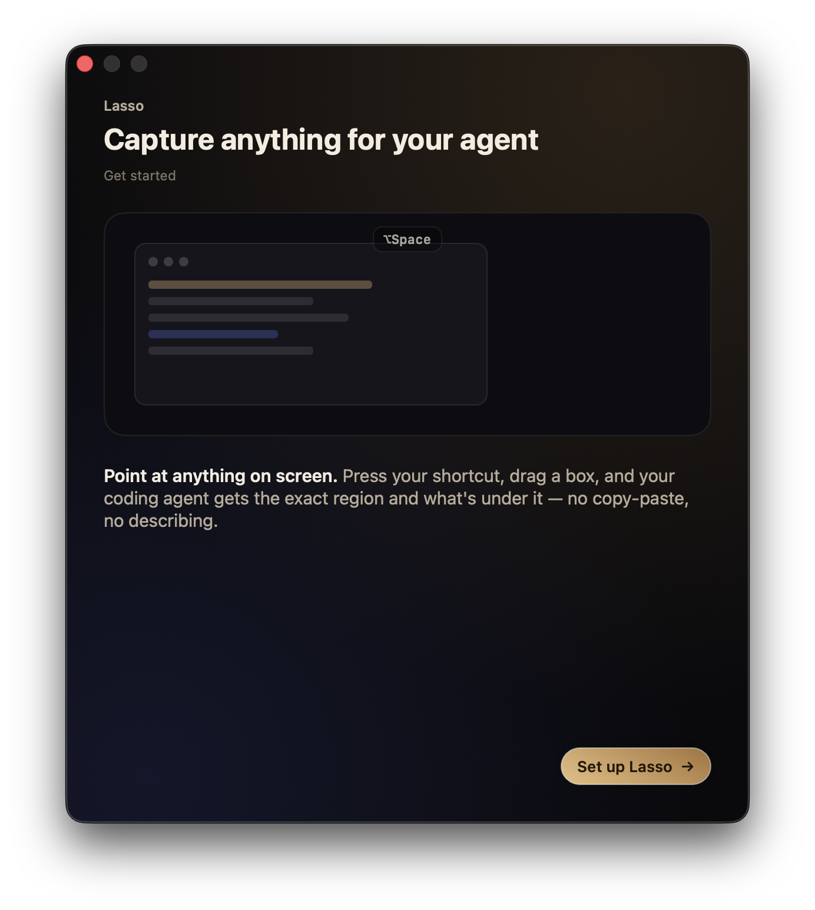
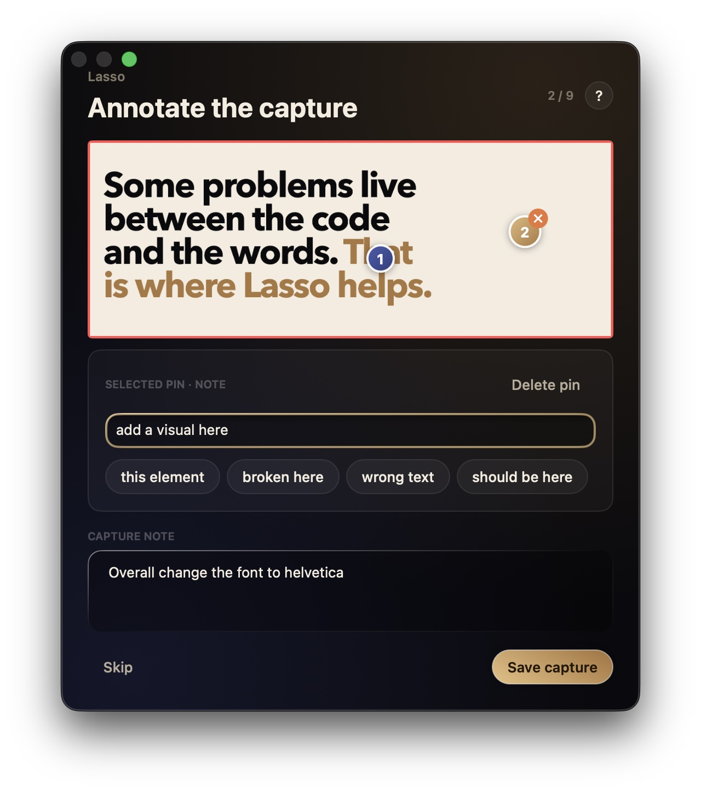
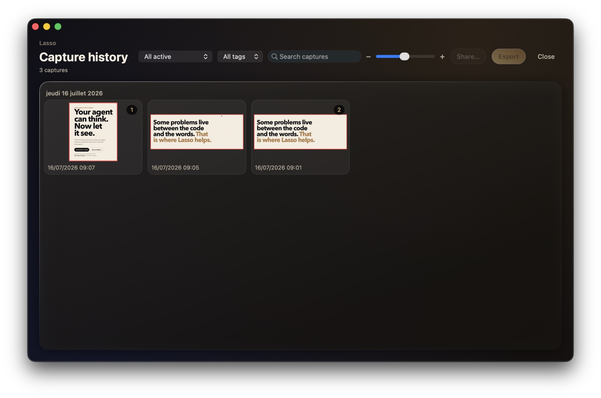
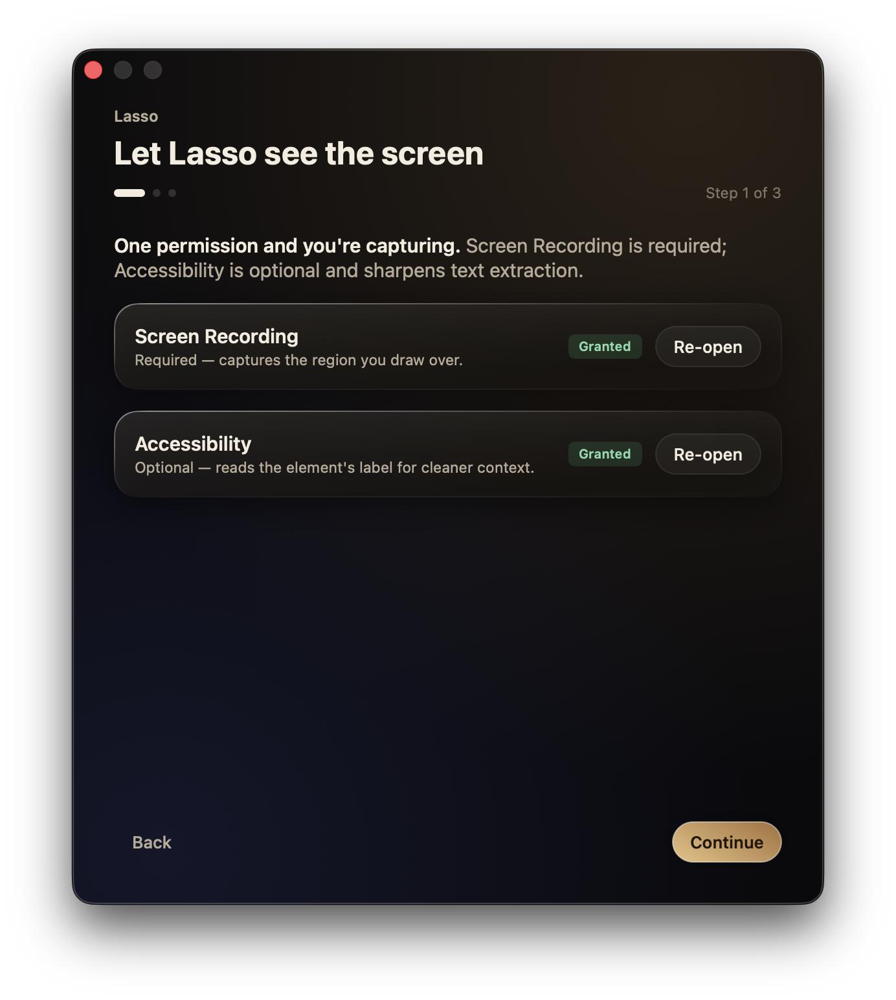

Point once. Your agent gets it.
Draw a rectangle around the exact visual state that matters. Add a pin or a note, then let your coding agent inspect what you chose.

A three-step handoff, visible from end to end.
Lasso keeps the screenshot, your comments, and the surrounding context together instead of scattering them across a prompt.
- 1 Frame the problem Press your shortcut and drag one deliberate rectangle.
- 2 Mark what matters Attach numbered pins or one note for the full capture.
- 3 Let the agent inspect it Claude Code, Codex, and Cursor read the capture through MCP.

Your context does not disappear after the handoff.
Browse captures by day, search notes and tags, keep the useful ones, clean the rest, and export a focused set when a review needs to leave your Mac.


A Mac utility, not another workspace.
Lasso lives in the menu bar. Grant Screen Recording, connect the bundled MCP server to your agent, and use the shortcut whenever words are the slow way to explain what is on screen.
Your screen stays yours until you choose otherwise.
Give your agent the one thing it is missing.
Lasso is free, open source, notarized, and built for macOS 14 or later.
Download for macOS